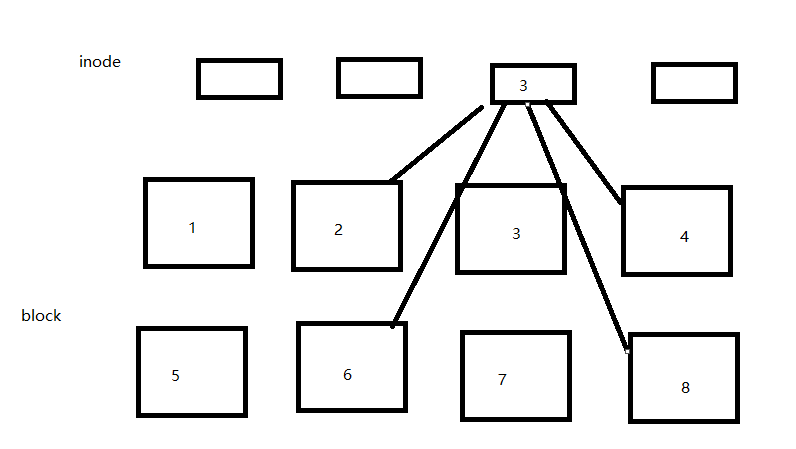
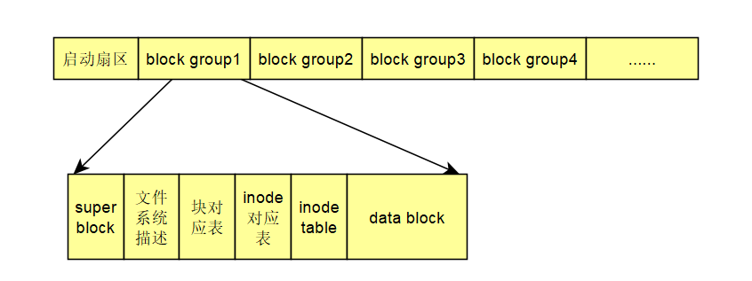
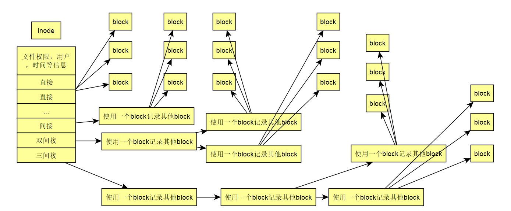
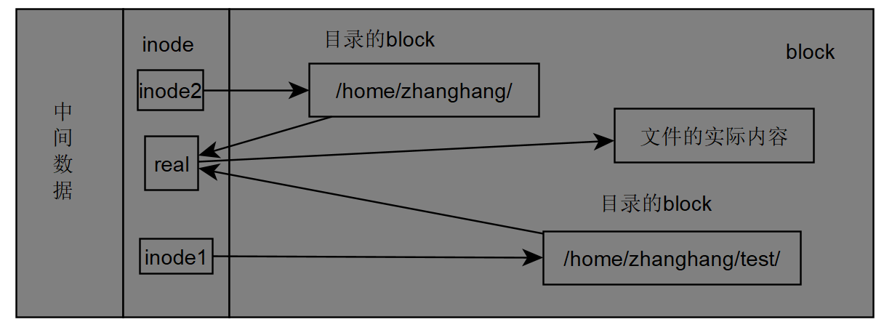
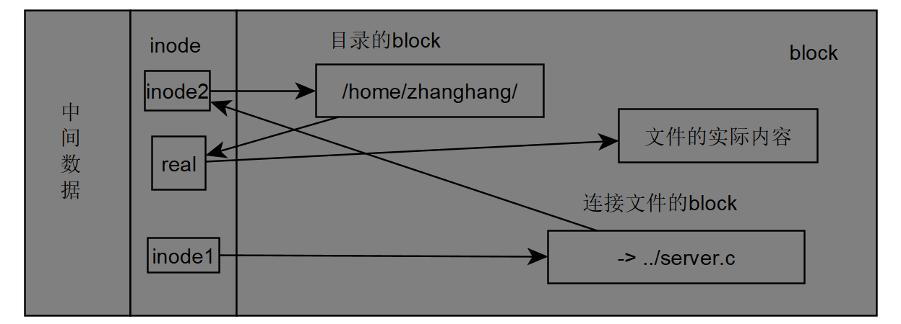

硬盘：
圆形的盘片：记录数据
机械手臂：读写磁盘数据
扇区：最小的物理存储单位512byte
扇区组成的圆：柱面，柱面是分区的最小单位
第一个扇区：含有硬盘的主引导记录MBR（446byte）和分区表（64byte）
各种接口在Linux系统中的文件名：
/dev/sd[a-p][1-15]：SCSI,SATA,USB,FLASH等接口
/dev/hd[a-d][1-63]：IDE接口
如何记录指定分区的柱面范围：
64byte的分区表记录四条分区记录：
主分区+扩展分区（扩展分区可分出逻辑分区），主分区和逻辑分区可被格式化
主分区和扩展分区最多四个，扩展分区最多一个。
逻辑分区的数量因操作系统的不同而不同，在Linux中，IDE硬盘最多有59个逻辑分区（5-63），SATA硬盘则有11个逻辑分区（5-15）
Linux正规的文件系统是EXT2。
传统的文件系统中，一个分区只能格式化微一个文件系统。如今可将多个分区格式化为一个文件系统。也可以将一个分区格式化为多个文件系统
现称：一个可被挂载的数据是一个文件系统而不是分区
Linux操作系统将文件的属性和数据分开存放。属性放在inode中，数据放在data block中。另外还会有一个超级块去记录文件系统的整体信息，包括inode和block的总数，使用数和剩余数。
super block（超级块）：记录此文件系统的整体信息，包括inode，block的总数，使用量和剩余量，以及文件系统的格式或相关信息
inode：记录文件的属性，一个文件占用一个inode，同属也会记录此文件的数据所在的block号码
block：实际记录文件的内容，若文件太大会占用多个block

Linux使用这种索引式文件系统，当一个文件数据占用4个block如上图，分别是2 4 6 8时，此文件对应的inode会记录此文件所占用的所有block编号，通过inode即可找到文件。
像U盘之类的使用FAT文件系统的设备，没有inode的存在，使用前一个block记录后一个block的编号，即可读完整个文件。
文件系统一开始就会将inode和block规划好，除非重新格式化，或者resize2fs等命令更改文件系统大小，否则inode和block固定后将不再变动。
Ext2文件系统格式化后会分为多个块组（block group）每个块组拥有独立的inode/block/super block系统。文件系统最前面有一个启动扇区，这个启动扇区可以安装引导装载程序。这样可以可以将不同引导装载程序安装在个别文件系统的最前端，不用覆盖整块硬盘唯一的MBR，制作出多重引导环境。

1.data block，Ext2文件系统支持的block大小有三个：1,2,4KB。
block的大小和数量在格式化后就不能改变了
每个block最多放置一个文件数据，如果文件数据小于block大小，多余空间也不可被使用，如果大于一个block，会再用掉一个block。
inode table（inode）：
记录：
该文件的访问模式rwx
所有者和组(user，group）
文件大小
创建或修改时间
最后一次修改时间
inode也在初始化是时大小数量被固定
每个inode大小固定128byte
每个文件仅会占用一个inode
一个文件系统能创建的文件数量与inode有关
系统读取文件时先找到inode，分析权限，用户等，符合才能读取block内容
inode记录一个block要花费4byte，inode总大小128byte，当文件占用的block数大于inode能记录的最大block数时，会怎样？
Linux系统将inode记录block的号码区域定义为12个直接，1个间接，一个双间接，一个三间接，block为1KB时文件最大可达到16GB，逻辑如下：

super block：相关信息可使用dumpe2fs命令查看
记录：
block和inode总量
未使用和已使用的inode/block量
block，inode大小(block：1,2,4KB，inode 128byte）
文件系统挂载时间，最近一次写入数据时间，最近一次检验磁盘时间等
每个block group都可能含有一个super block，用来作为super block的备份
文件系统描述说明：
描述每个block group开始和结束的block号码，可使用dumpe2fs查看
块对照表：
记录哪些block是在被使用的未被使用的
inode对照表：
记录哪些inode是在被使用的未被使用的
df查看当前被挂载的设备
zhanghang@zhanghang-virtual-machine:~$ df
Filesystem 1K-blocks Used Available Use% Mounted on
udev 1006084 4 1006080 1% /dev
tmpfs 203920 664 203256 1% /run
/dev/sda1 39089600 6029660 31051264 17% / <-----------------
none 4 0 4 0% /sys/fs/cgroup
none 5120 0 5120 0% /run/lock
none 1019584 152 1019432 1% /run/shm
none 102400 28 102372 1% /run/user
/dev/sr0 1130496 1130496 0 100% /media/zhanghang/Ubuntu 14.04.6 LTS amd641
zhanghang@zhanghang-virtual-machine:~$ sudo dumpe2fs /dev/sda1 > test.txt ; head -n 80 test.txt
dumpe2fs 1.42.9 (4-Feb-2014)
Filesystem volume name: <none> 文件系统名称（暂无）
Last mounted on: /
Filesystem UUID: ce0666b7-882b-4ede-8e5f-3b8a2a4611dc
Filesystem magic number: 0xEF53
Filesystem revision #: 1 (dynamic)
Filesystem features: has_journal ext_attr resize_inode dir_index filetype needs_recovery extent flex_bg sparse_super large_file huge_file uninit_bg dir_nlink extra_isize
Filesystem flags: signed_directory_hash
Default mount options: user_xattr acl
Filesystem state: clean 文件系统没有问题
Errors behavior: Continue
Filesystem OS type: Linux
Inode count: 2490368 inode总数
Block count: 9961472 block总数
Reserved block count: 498073
Free blocks: 8264973 可用block
Free inodes: 2219590 可用inode
First block: 0
Block size: 4096 block大小
Fragment size: 4096
Reserved GDT blocks: 1021
Blocks per group: 32768 每个block group中block数
Fragments per group: 32768
Inodes per group: 8192 每个block group中inode数
Inode blocks per group: 512
Flex block group size: 16
Filesystem created: Tue Jul 14 11:20:24 2020
Last mount time: Tue Mar 9 14:52:54 2021
Last write time: Tue Mar 9 14:52:54 2021
Mount count: 92
Maximum mount count: -1
Last checked: Tue Jul 14 11:20:24 2020
Check interval: 0 (<none>)
Lifetime writes: 4946 MB
Reserved blocks uid: 0 (user root)
Reserved blocks gid: 0 (group root)
First inode: 11
Inode size: 256 inode大小
Required extra isize: 28
Desired extra isize: 28
Journal inode: 8
First orphan inode: 1327443
Default directory hash: half_md4
Directory Hash Seed: adef8694-ee6a-48d9-82ce-05ca2ad8d49a
Journal backup: inode blocks
Journal features: journal_incompat_revoke
Journal size: 128M
Journal length: 32768
Journal sequence: 0x0000969a
Journal start: 9505
Group 0: (Blocks 0-32767) [ITABLE_ZEROED]
Checksum 0xce34, unused inodes 8179
Primary superblock at 0, Group descriptors at 1-3 super block在group0,
Reserved GDT blocks at 4-1024
Block bitmap at 1025 (+1025), Inode bitmap at 1041 (+1041)
Inode table at 1057-1568 (+1057)
23513 free blocks, 8179 free inodes, 2 directories, 8179 unused inodes
Free blocks: 9255-32767
Free inodes: 14-8192
Group 1: (Blocks 32768-65535) [INODE_UNINIT, ITABLE_ZEROED]
Checksum 0x5632, unused inodes 8192
Backup superblock at 32768, Group descriptors at 32769-32771
Reserved GDT blocks at 32772-33792
Block bitmap at 1026 (bg #0 + 1026), Inode bitmap at 1042 (bg #0 + 1042)
Inode table at 1569-2080 (bg #0 + 1569)
24336 free blocks, 8192 free inodes, 0 directories, 8192 unused inodes
Free blocks: 34170-34303, 36347-36863, 41378-41407, 41435-41439, 41468-60927, 61346-65535
Free inodes: 8193-16384
Group 2: (Blocks 65536-98303) [INODE_UNINIT, ITABLE_ZEROED]
Checksum 0xd465, unused inodes 8192
Block bitmap at 1027 (bg #0 + 1027), Inode bitmap at 1043 (bg #0 + 1043)
Inode table at 2081-2592 (bg #0 + 2081)
21924 free blocks, 8192 free inodes, 0 directories, 8192 unused inodes
Free blocks: 65536-67327, 67525-75135, 75243-86015, 89320-90111, 93252-94207
Free inodes: 16385-24576
Group 3: (Blocks 98304-131071) [INODE_UNINIT, ITABLE_ZEROED]
Checksum 0x48ab, unused inodes 8192
Backup superblock at 98304, Group descriptors at 98305-98307
Reserved GDT blocks at 98308-99328
zhanghang@zhanghang-virtual-machine:~$
在Linux下创建目录时，ext2会分配一个inode好至少一个block给该目录。inode记录目录的权限属性等和分配的block号码。
block记录这个目录下的文件名和该文件名占用的inode号码的数据
ls -li查看文件占用的inode
zhanghang@zhanghang-virtual-machine:~$ ls -li
total 524
787712 -rw-rw-r-- 1 zhanghang zhanghang 8690 8æ 4 2020 aaa.c
797696 -rw-r--r-- 1 root root 58486 12æ 23 16:22 aaa.cap
787709 -rwxrwxr-x 1 zhanghang zhanghang 8518 1æ 25 11:02 a.out
787710 -rw-rw-r-- 1 zhanghang zhanghang 7540 8æ 4 2020 bbb.c
793325 -rwxrwxr-x 1 zhanghang zhanghang 9157 12æ 23 14:23 c
797739 -rwxrw-rw- 1 zhanghang zhanghang 1056 12æ 23 14:23 client.c
793906 -rw-rw-r-- 1 zhanghang zhanghang 1041 1æ 23 13:11 curl-7.74.0.tar.gz
zhanghang@zhanghang-virtual-machine:/$ ll -d /bin /boot /proc /sbin
drwxr-xr-x 2 root root 4096 7æ 14 2020 /bin/ 1个block
drwxr-xr-x 3 root root 4096 7æ 14 2020 /boot/ 1个block
dr-xr-xr-x 270 root root 0 3æ 9 14:52 /proc/ proc存在于内存的伪文件系统，不占用硬盘
drwxr-xr-x 2 root root 12288 7æ 30 2020 /sbin/ 3个block
目录中文件太多时可能占用多个block
ext2文件系统下创建一个文件，文件系统会根据文件大小分配1个inode和与文件大小对等的block数量
目录树是从根目录开始读取，通过挂载点信息可以找到挂载点的inode号码（通常为2），从根目录的inode去读取inode对应的block中的文件名及文件对应的inode，从而读取到文件
cat /etc/passwd文件的流程：
zhanghang@zhanghang-virtual-machine:~$ ll -di / /etc/ /etc/passwd
2 drwxr-xr-x 24 root root 4096 3æ 9 20:26 //
131073 drwxr-xr-x 127 root root 12288 3æ 9 20:52 /etc//
142620 -rw-r--r-- 1 root root 1989 7æ 24 2020 /etc/passwd
/的inode
通过挂载点信息找到/dev/sda1的inode号码为2的根目录inode，且inode具有rx权限可读取此block内容
/的block
取得上述block后找到/etc对应inode号码
/etc的inode
读取131073inode具有rx权限可读取/etc的block
/etc的block
取得上述block后得到passwd文件的inode
passwd的inode
具有r权限
passwd的block
读取block内容即可
新创建一个文件或目录时，Ext2文件系统的操作：
先确定用户对此文件是否具有w和x权限，有的话才能加入
inode bitmap找到没有使用的inode号码，将新文件的权限/属性写入
block bitmap找到没有使用的block号码，将实际数据写入block中，并更新inode的block指针
将刚才写入的inode和block数据同步到inode/block bitmap,并更新super block
日志文件系统Ext3->解决如上操作过程中发生断电等问题的情况下，（super block，inode/block bitmap 即meta data中间数据，经常变化的数据）中数据与inode/block不一致的情况
预备：当系统要写入一个文件时，会现在日志记录块中记录某个文件要写入的信息
实际写入：开始写入文件的权限与数据，开始更新meta data数据
结束：完成数据与meta data的更新后，在日志记录块中完成该文件的记录
Linux文件磁盘读写的异步处理方式：
系统加载一个文件到内存后，如果文件没有被改动，则此文件在内存中会被设置一个标志clean，如果改动这个文件，此标志会被设置为dirty。此时所有的操作都在内存中执行，并没有写入到磁盘中。系统会不定时的将北村中设置为dirty的数据写入到磁盘，以保持磁盘与内存数据的一致性，也可以使用sync，fsync系列的函数强制将数据写入到磁盘。
系统会将常用的文件放到主存储器的缓冲器，以加速文件系统的读写
系统的物理内存最后会被用光，这是正常的，可加速系统性能
正常关机时，关机命令会调用sync将内存中的数据写入到磁盘
若不正常关机，由于数据未写回到磁盘，重启后回话更多的时间进行磁盘检验，甚至损坏文件系统（非磁盘损坏）
每个文件系统都有自己的inode,block，superblock等信息，这个文件系统要连接带目录树才能被我们使用。将文件系统和目录树的操作我们称为挂载。挂载点一定是目录，该目录是进入该文件系统的入口。
root@zhanghang-virtual-machine:/# ls -lid /
2 drwxr-xr-x 24 root root 4096 3æ 9 20:26 /
文件系统最顶层的inode号一般为2
root@zhanghang-virtual-machine:/# ls -lid / /.. /.
2 drwxr-xr-x 24 root root 4096 3æ 9 20:26 /
2 drwxr-xr-x 24 root root 4096 3æ 9 20:26 /.
2 drwxr-xr-x 24 root root 4096 3æ 9 20:26 /..
/ /.. /.为同一个文件
磁盘与目录的容量shell命令：
df,du
zhanghang@zhanghang-virtual-machine:/$ df
Filesystem 1K-blocks Used Available Use% Mounted on
udev 1006084 4 1006080 1% /dev
tmpfs 203920 664 203256 1% /run
/dev/sda1 39089600 6123536 30957388 17% /
none 4 0 4 0% /sys/fs/cgroup
none 5120 0 5120 0% /run/lock
none 1019584 144 1019440 1% /run/shm
none 102400 36 102364 1% /run/user
zhanghang@zhanghang-virtual-machine:/$ df -h
Filesystem Size Used Avail Use% Mounted on
udev 983M 4.0K 983M 1% /dev
tmpfs 200M 664K 199M 1% /run
/dev/sda1 38G 5.9G 30G 17% /
none 4.0K 0 4.0K 0% /sys/fs/cgroup
none 5.0M 0 5.0M 0% /run/lock
none 996M 144K 996M 1% /run/shm
none 100M 36K 100M 1% /run/user
zhanghang@zhanghang-virtual-machine:/$ df -aT
Filesystem Type 1K-blocks Used Available Use% Mounted on
sysfs sysfs 0 0 0 - /sys
proc proc 0 0 0 - /proc
udev devtmpfs 1006084 4 1006080 1% /dev
devpts devpts 0 0 0 - /dev/pts
tmpfs tmpfs 203920 664 203256 1% /run
/dev/sda1 ext4 39089600 6123536 30957388 17% /
none tmpfs 4 0 4 0% /sys/fs/cgroup
none fusectl 0 0 0 - /sys/fs/fuse/connections
none debugfs 0 0 0 - /sys/kernel/debug
none securityfs 0 0 0 - /sys/kernel/security
none tmpfs 5120 0 5120 0% /run/lock
none tmpfs 1019584 144 1019440 1% /run/shm
none tmpfs 102400 36 102364 1% /run/user
none pstore 0 0 0 - /sys/fs/pstore
systemd cgroup 0 0 0 - /sys/fs/cgroup/systemd
vmware-vmblock fuse.vmware-vmblock 0 0 0 - /run/vmblock-fuse
gvfsd-fuse - - - - - /run/user/112/gvfs
zhanghang@zhanghang-virtual-machine:/$ df -ih
Filesystem Inodes IUsed IFree IUse% Mounted on
udev 246K 448 246K 1% /dev
tmpfs 249K 458 249K 1% /run
/dev/sda1 2.4M 265K 2.2M 11% /
none 249K 2 249K 1% /sys/fs/cgroup
none 249K 5 249K 1% /run/lock
none 249K 4 249K 1% /run/shm
none 249K 19 249K 1% /run/user
du
-a列出所有文件与目录总量
-h易读方式列出G/M
-s列出总量，不列出个别目录占用总量
-S不包括子目录的统计
-k 以KB显示
-m以MB显示
du：
...
8 ./kernel/ubuntu/opennsl/OpenNSL/sdk-6.5.10-gpl-modules/systems/linux/kernel/modules/bcm-knet
24 ./kernel/ubuntu/opennsl/OpenNSL/sdk-6.5.10-gpl-modules/systems/linux/kernel/modules
28 ./kernel/ubuntu/opennsl/OpenNSL/sdk-6.5.10-gpl-modules/systems/linux/kernel
88 ./kernel/ubuntu/opennsl/OpenNSL/sdk-6.5.10-gpl-modules/systems/linux
120 ./kernel/ubuntu/opennsl/OpenNSL/sdk-6.5.10-gpl-modules/systems
76 ./kernel/ubuntu/opennsl/OpenNSL/sdk-6.5.10-gpl-modules/make
212 ./kernel/ubuntu/opennsl/OpenNSL/sdk-6.5.10-gpl-modules
216 ./kernel/ubuntu/opennsl/OpenNSL
228 ./kernel/ubuntu/opennsl
12 ./kernel/ubuntu/ixxat
416 ./kernel/ubuntu
161120 ./kernel
1796372 .
du -h:
...
24K ./kernel/ubuntu/opennsl/OpenNSL/sdk-6.5.10-gpl-modules/systems/linux/kernel/modules
28K ./kernel/ubuntu/opennsl/OpenNSL/sdk-6.5.10-gpl-modules/systems/linux/kernel
88K ./kernel/ubuntu/opennsl/OpenNSL/sdk-6.5.10-gpl-modules/systems/linux
120K ./kernel/ubuntu/opennsl/OpenNSL/sdk-6.5.10-gpl-modules/systems
76K ./kernel/ubuntu/opennsl/OpenNSL/sdk-6.5.10-gpl-modules/make
212K ./kernel/ubuntu/opennsl/OpenNSL/sdk-6.5.10-gpl-modules
216K ./kernel/ubuntu/opennsl/OpenNSL
228K ./kernel/ubuntu/opennsl
12K ./kernel/ubuntu/ixxat
416K ./kernel/ubuntu
158M ./kernel
1.8G .
du -a:
...
8 ./kernel/ubuntu/opennsl/OpenNSL/sdk-6.5.10-gpl-modules/make/Makefile.linux-iproc-3_14
4 ./kernel/ubuntu/opennsl/OpenNSL/sdk-6.5.10-gpl-modules/make/Makefile.linux-x86-common-2_6
4 ./kernel/ubuntu/opennsl/OpenNSL/sdk-6.5.10-gpl-modules/make/Makefile.linux-x86-smp_generic_64-2_6
8 ./kernel/ubuntu/opennsl/OpenNSL/sdk-6.5.10-gpl-modules/make/Makefile.linux-kernel-4_4
76 ./kernel/ubuntu/opennsl/OpenNSL/sdk-6.5.10-gpl-modules/make
212 ./kernel/ubuntu/opennsl/OpenNSL/sdk-6.5.10-gpl-modules
216 ./kernel/ubuntu/opennsl/OpenNSL
4 ./kernel/ubuntu/opennsl/Makefile
4 ./kernel/ubuntu/opennsl/Kconfig
228 ./kernel/ubuntu/opennsl
4 ./kernel/ubuntu/ixxat/Makefile
4 ./kernel/ubuntu/ixxat/Kconfig
12 ./kernel/ubuntu/ixxat
4 ./kernel/ubuntu/Kconfig
416 ./kernel/ubuntu
161120 ./kernel
4 ./.dmrc
1796372 .
root@zhanghang-virtual-machine:/home/zhanghang# du -s
1796372 .
du -S:
...
8 ./kernel/ubuntu/opennsl/OpenNSL/sdk-6.5.10-gpl-modules/systems/linux/kernel/modules/shared
8 ./kernel/ubuntu/opennsl/OpenNSL/sdk-6.5.10-gpl-modules/systems/linux/kernel/modules/bcm-knet
8 ./kernel/ubuntu/opennsl/OpenNSL/sdk-6.5.10-gpl-modules/systems/linux/kernel/modules
4 ./kernel/ubuntu/opennsl/OpenNSL/sdk-6.5.10-gpl-modules/systems/linux/kernel
4 ./kernel/ubuntu/opennsl/OpenNSL/sdk-6.5.10-gpl-modules/systems/linux
4 ./kernel/ubuntu/opennsl/OpenNSL/sdk-6.5.10-gpl-modules/systems
76 ./kernel/ubuntu/opennsl/OpenNSL/sdk-6.5.10-gpl-modules/make
4 ./kernel/ubuntu/opennsl/OpenNSL/sdk-6.5.10-gpl-modules
4 ./kernel/ubuntu/opennsl/OpenNSL
12 ./kernel/ubuntu/opennsl
12 ./kernel/ubuntu/ixxat
12 ./kernel/ubuntu
52104 ./kernel
668 .
连接文件：
硬链接：在某个目录下新建一个文件名链接到某个inode号码的关联记录
root@zhanghang-virtual-machine:/home/zhanghang# ls -li
794471 -rw-rw-r-- 1 zhanghang zhanghang 849 3æ 20 16:34 server.c
root@zhanghang-virtual-machine:/home/zhanghang/test# ls
aaa.c a.out test test.c
root@zhanghang-virtual-machine:/home/zhanghang/test# ln ../server.c .
root@zhanghang-virtual-machine:/home/zhanghang/test# ls
aaa.c a.out server.c test test.c
root@zhanghang-virtual-machine:/home/zhanghang/test# ll -i ../server.c server.c
794471 -rw-rw-r-- 2 zhanghang zhanghang 849 3æ 20 16:34 ../server.c
794471 -rw-rw-r-- 2 zhanghang zhanghang 849 3æ 20 16:34 server.c
test目录下的server.c和test/../server.c有着同样的inode号码:794471
ls -li命令第三个字段连接数也由1变为了2,连接数表示有多少个文件名链接到这个目录

inode2指向目录/home/zhanghang
inode1指向目录/home/zhanghang/test
文件server.c在/home/zhanghang目录下，其inode real记录在/home/zhanghang的block中
新建一个到目录/home/zhanghang/test/的server.c连接时，/home/zhanghang/test的block中会多一条指向inode real的数据
因此新建一个硬链接只是在对应目录的block中添加一条指向该文件的索引，不会增加inode和block
由图可知，硬链接的活动范围只能针对单一文件系统进行。
不能跨文件系统，不能连接目录：因为使用硬链接与一个目录建立连接是，需要和对应目录下的所有文件都建立连接，而且目录下还有可能有目录，复杂度比较大，暂时不支持
符号链接（Windows的快捷方式）
创建一个独立的文件，文件的数据读取指向连接的文件的文件名，当原文件被删除时，符号链接也会打不开
root@zhanghang-virtual-machine:/home/zhanghang/test# ln -s ../server.c .
root@zhanghang-virtual-machine:/home/zhanghang/test# ls -li ../server.c server.c
797722 -rw-rw-r-- 1 zhanghang zhanghang 866 3æ 20 16:50 ../server.c
1191678 lrwxrwxrwx 1 root root 11 3æ 22 11:01 server.c -> ../server.c
以上两个文件的inode号码是不一样的，连接文件会写上目标文件的文件名
第二行的root后的数字11代表链接文件链接到的文件名的长度，即符号链接会记录这个文件名的路径，即：../server.c长度为11，当使用绝对路径创建符号链接时，这个长度又会变成绝对路径的长度
当使用符号链接时，ln -s后的两个参数分别是实际文件和符号链接文件，两者不能调换顺序

与硬连接不同的是，符号链接文件有自己的inode1和block，当访问符号链接时，inode1找到连接文件的block，读取block的数据为../server.c，再根据文件名去找到对应文件的inode->block。
当实际文件删除，移动，改名时，符号链接都会失效
root@zhanghang-virtual-machine:/tmp# vim test
root@zhanghang-virtual-machine:/tmp# df
Filesystem 1K-blocks Used Available Use% Mounted on
udev 1006084 4 1006080 1% /dev
tmpfs 203920 664 203256 1% /run
/dev/sda1 39089600 6123540 30957384 17% /
none 4 0 4 0% /sys/fs/cgroup
none 5120 0 5120 0% /run/lock
none 1019584 144 1019440 1% /run/shm
none 102400 36 102364 1% /run/user
root@zhanghang-virtual-machine:/tmp# df -i
Filesystem Inodes IUsed IFree IUse% Mounted on
udev 251521 448 251073 1% /dev
tmpfs 254896 458 254438 1% /run
/dev/sda1 2490368 270801 2219567 11% /
none 254896 2 254894 1% /sys/fs/cgroup
none 254896 5 254891 1% /run/lock
none 254896 4 254892 1% /run/shm
none 254896 19 254877 1% /run/user
root@zhanghang-virtual-machine:/tmp# du -sb
45867 .
root@zhanghang-virtual-machine:/tmp# ln test test_hd
root@zhanghang-virtual-machine:/tmp# du -sb
45867 .
root@zhanghang-virtual-machine:/tmp# df
Filesystem 1K-blocks Used Available Use% Mounted on
udev 1006084 4 1006080 1% /dev
tmpfs 203920 664 203256 1% /run
/dev/sda1 39089600 6123540 30957384 17% /
none 4 0 4 0% /sys/fs/cgroup
none 5120 0 5120 0% /run/lock
none 1019584 144 1019440 1% /run/shm
none 102400 36 102364 1% /run/user
root@zhanghang-virtual-machine:/tmp# df -h
Filesystem Size Used Avail Use% Mounted on
udev 983M 4.0K 983M 1% /dev
tmpfs 200M 664K 199M 1% /run
/dev/sda1 38G 5.9G 30G 17% /
none 4.0K 0 4.0K 0% /sys/fs/cgroup
none 5.0M 0 5.0M 0% /run/lock
none 996M 144K 996M 1% /run/shm
none 100M 36K 100M 1% /run/user
root@zhanghang-virtual-machine:/tmp# df -i
Filesystem Inodes IUsed IFree IUse% Mounted on
udev 251521 448 251073 1% /dev
tmpfs 254896 458 254438 1% /run
/dev/sda1 2490368 270801 2219567 11% /
none 254896 2 254894 1% /sys/fs/cgroup
none 254896 5 254891 1% /run/lock
none 254896 4 254892 1% /run/shm
none 254896 19 254877 1% /run/user
root@zhanghang-virtual-machine:/tmp# ls -li test test_hd
2101715 -rw-r--r-- 2 root root 6 3æ 22 11:43 test
2101715 -rw-r--r-- 2 root root 6 3æ 22 11:43 test_hd
root@zhanghang-virtual-machine:/tmp# ln -s test test_so
root@zhanghang-virtual-machine:/tmp# ls -li test test_so
2101715 -rw-r--r-- 2 root root 6 3æ 22 11:43 test
2101714 lrwxrwxrwx 1 root root 4 3æ 22 11:45 test_so -> test
root@zhanghang-virtual-machine:/tmp# du -sb
45871 .
root@zhanghang-virtual-machine:/tmp# df -i
Filesystem Inodes IUsed IFree IUse% Mounted on
udev 251521 448 251073 1% /dev
tmpfs 254896 458 254438 1% /run
/dev/sda1 2490368 270802 2219566 11% /
none 254896 2 254894 1% /sys/fs/cgroup
none 254896 5 254891 1% /run/lock
none 254896 4 254892 1% /run/shm
none 254896 19 254877 1% /run/user